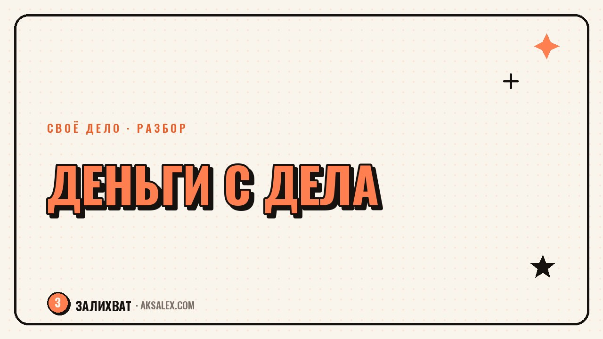

Сколько времени нужно, чтобы любимое дело приносило деньги

Вопрос «когда уже начнутся деньги» рано или поздно встаёт перед каждым, кто превращает увлечение в дело. Готового ответа в месяцах никто не даст - слишком много переменных. Но есть этапы, через которые проходит почти любое дело, и по ним можно примерно понять, на какой стадии ты сейчас и чего реально ждать дальше. Разберём это по шагам, без красивых обещаний про успех за месяц.
Почему вопрос про сроки звучит честнее, чем про сумму
Люди обычно спрашивают «сколько я буду зарабатывать», но важнее вопрос «когда появятся хоть какие-то деньги». Первая оплата и стабильный доход - разные точки на пути, и разница между ними часто занимает больше времени, чем кажется на старте.
Сроки зависят от ниши и от того, сколько часов в неделю реально вкладываешь. У блогера с готовой аудиторией первая оплата может прийти за месяц, у мастера с нуля в новой профессии - через полгода и больше.
Этапы, через которые проходит почти любое дело
Полезно разложить путь на стадии - так тревога «ничего не получается» заменяется пониманием, на каком этапе ты находишься.
Четыре стадии на пути к деньгам
- Проверка идеи: первые клиенты или покупатели, часто знакомые или по рекомендации
- Первые регулярные заказы: доход есть, но нестабильный и зависит от сарафанного радио
- Повторяемая система: есть понятный способ находить клиентов, доход предсказуем
- Масштабирование: можно расширяться, нанимать помощников или поднимать цены
Переход от первой стадии ко второй у большинства занимает от трёх до восьми месяцев регулярной работы. Переход к третьей стадии растягивается на год и больше - именно здесь многие бросают, не дойдя до стабильности.
Что реально ускоряет появление денег
Скорость в первую очередь зависит не от таланта, а от того, насколько быстро ты доходишь до первого реального клиента, а не до идеальной подготовки. Многие месяцами учатся и настраивают сайт, откладывая момент, когда нужно продать хоть что-то первому человеку.
| Что делаешь | Как влияет на срок | Пример |
|---|---|---|
| Продаёшь до идеальной готовности | Сокращает путь к первой оплате в разы | Берёшь первого клиента на черновой вариант услуги |
| Используешь нейросети для рутины | Освобождает время на поиск клиентов | Контент-план, тексты, обработка фото через ИИ |
| Ждёшь идеального момента | Растягивает путь на месяцы | Доработка сайта вместо первых продаж |
| Собираешь обратную связь с первых заказов | Ускоряет выход на вторую стадию | Правишь услугу под реальные запросы клиентов |
Первый клиент почти никогда не приходит к идеальному продукту - он приходит к человеку, который уже что-то делает, пусть и не до конца отполированное.
Что обычно тормозит на старте
Чаще всего деньги задерживаются не из-за рынка, а из-за внутренних причин: страха показать несовершенную работу, попытки понравиться всем сразу и нежелания называть цену вслух. Эти вещи не решаются временем - они решаются конкретным действием здесь и сейчас.
- Страх назвать цену - решается тем, что цену всё-таки называешь, даже если неловко
- Попытка сделать идеально перед первой продажей - решается тестовой версией для первых клиентов
- Отсутствие чёткого предложения - решается одним понятным описанием, что ты делаешь и для кого
- Поиск клиентов только через знакомых - решается выходом в соцсети и на внешние площадки
Как держать себя в деле, пока денег ещё мало
На этапе, когда доход нерегулярный, важно не менять стратегию каждую неделю. Лучше выбрать один способ поиска клиентов на два-три месяца и честно его придерживаться, а не метаться между подходами.
Параллельно стоит считать не только деньги, но и косвенные результаты: число откликов, повторные обращения, отзывы. Это тоже сигналы роста, даже если сумма в кошельке пока не изменилась.
Когда стоит признать, что дело пока не окупается
Честный срок проверки - полгода-год регулярной работы минимум по четырём-восемь часов в неделю. Если за это время нет вообще ни одного платящего клиента и ни одного живого интереса от аудитории, стоит пересмотреть не само дело, а подход к нему: нишу, цену, способ подачи.
- Полное отсутствие интереса за полгода - сигнал пересмотреть нишу или формат, а не бросать вообще
- Интерес есть, а денег нет - вопрос скорее в цене и в способе предложения, чем в самом деле
- Деньги есть, но они нерегулярные - это нормальная вторая стадия, а не провал
Частые вопросы
Через сколько в среднем приходит первая оплата за любимое дело?
У большинства первая оплата появляется в течение одного-трёх месяцев активной работы, если сразу пробовать продавать, а не только готовиться. При этом дело может оставаться нестабильным доходом ещё долго.
Нормально ли, что доход нерегулярный спустя полгода?
Да, это обычная вторая стадия развития дела. Регулярность чаще приходит на второй год, когда появляется понятная система поиска клиентов, а не разовые заказы по знакомству.
Что делать, если прошёл год, а денег почти нет?
Стоит разобрать по отдельности интерес аудитории, цену и способ подачи предложения. Часто проблема не в самом деле, а в том, что цена не названа прямо или предложение звучит неконкретно.
Ускоряют ли нейросети выход на стабильный доход?
Они освобождают время на рутине - текстах, обработке фото, организации заказов - и это время можно перенаправить на поиск клиентов. Саму продажу и общение с людьми нейросеть не заменит.
Стоит ли совмещать любимое дело с основной работой на этом этапе?
Да, это разумная стратегия на первой и второй стадии. Совмещение снимает финансовое давление и позволяет принимать решения спокойнее, а не из страха остаться без денег.
Раз тема оказалась полезной, вот что почитать следующим. Нейросети превращают запись созвона в протокол с задачами за несколько минут. Разбираем, как это настроить.
Читать статью →а не вручную